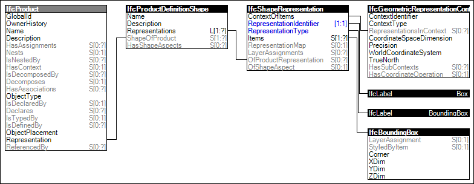

Link to this page
Link to this pageElements may have a simplified 'Box' representation describing the dimensions of the smallest box bounding the object. Such representation may be used for more efficient spatial indexing or hit-testing.
The representation identifier and type and the only allowed single representation item of the 'Box' representation are:
NOTE The specification does not determine the method by which the bounding box has to be created. If such a method need to be prescribed the definition has to be established by model view definitions or implementer agreements.
Figure 60 illustrates an instance diagram.
 |
Figure 60 — Box Geometry |